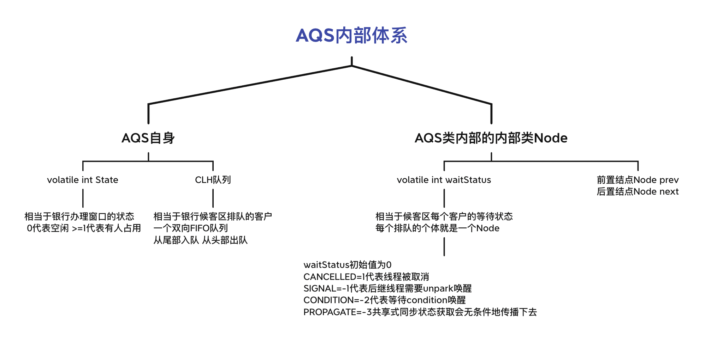
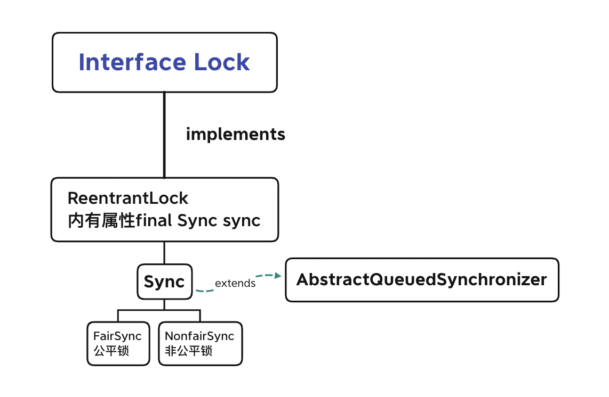
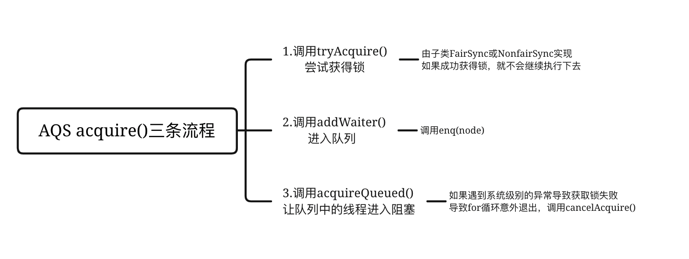
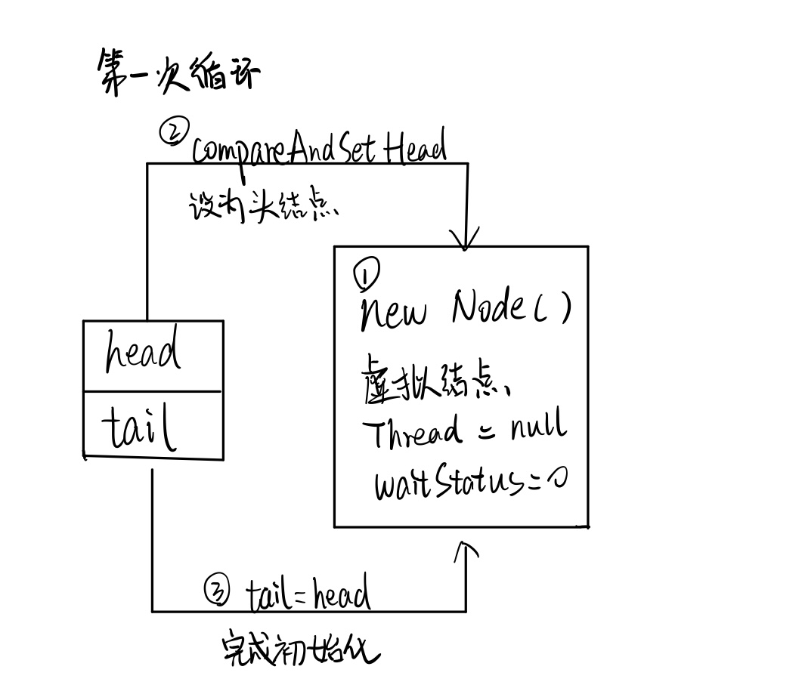
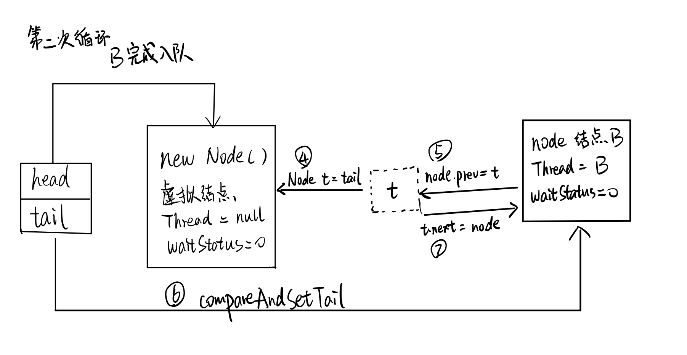
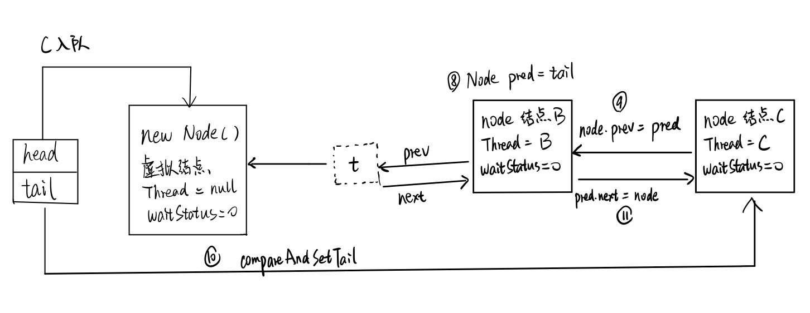

JUC-AQS源码
7.并发工具
7.4 AQS
AbstractQueuedSychronizer 抽象队列同步器，是用来实现锁或其他同步器组件的公共基础部分的抽象实现，是JUC体系的基石，主要用于解决锁分配给谁的问题。
特点：
- 用一个int类的state属性表示持有锁的状态（分为独占模式和共享模式，独占模式是只有一个线程能访问资源，共享模式可以允许多个线程访问资源），子类需要定义如何维护这个状态，控制如何获取锁和释放锁。
- 提供了FIFO的等待队列，类似于Monitor的EntryList。
- 提供条件变量来实现wait / notify机制，支持多个条件变量，类似于Monitor的WaitSet。
AQS有什么用：
由于加锁就会导致阻塞，有阻塞就需要排队，实现排队就需要队列。换句话说，如果共享资源被占用，就需要阻塞等待唤醒机制来保证锁分配。这个机制主要用CLH队列（FIFO）的变体实现，将暂时获取不到锁的线程加入到队列中，这个队列就是AQS的抽象表现。它将要请求共享资源的线程及自身的等待状态封装成队列的结点对象Node，通过CAS、自旋以及LockSupport.park()的方式维护state变量的状态，使并发达到同步的效果。
7.4.1 AQS内部体系

7.4.2 以ReentranLock为例看AQS源码

ReentrantLock默认创建非公平锁：
1 | public ReentrantLock() { |
7.4.2.1 公平锁和非公平锁的加锁是如何实现的？
- ReentrantLock中的
lock()实现了接口Lock中的lock()
1 | public void lock() { |
- ReentrantLock里的FairSync和NonfairSync静态内部类都有一个
lock()调用acquire()
1 | //NonfairSync 非公平锁 |
- 这个
acquire()是AbstractQueuedSynchronizer里的方法：
1 | public final void acquire(int arg) { |
可见调用了tryAcquire():
1 | protected boolean tryAcquire(int arg) { |
tryAcquire()又分为公平锁和非公平锁两种实现：
1 | //ReentrantLock中 FairSync类中的实现 |
可见，公平锁和非公平锁的lock()差别其实就在判断state==0后，设置Owner为当前线程前，还有一个!hasQueuedPredecessors()的判断。
hasQueuedPredecessors()判断前面还有没有在排队的线程，返回true表示前面有排队的线程，返回false表示当前线程是第一个线程或队列为空
1 | public final boolean hasQueuedPredecessors() { |
7.4.2.2 重点 acquire()
重点关注AQS类中的acquire()方法：
1 | public final void acquire(int arg) { |

首先尝试
tryAcquire(arg)，如果抢锁成功，那就不用继续执行。如果抢锁失败，调用
addWaiter()：1
2
3
4
5
6
7
8
9
10
11
12
13
14private Node addWaiter(Node mode) {
Node node = new Node(Thread.currentThread(), mode);//传入结点的模式是独占EXCLUSIVE
Node pred = tail; // 8
if (pred != null) {
node.prev = pred; // 9
if (compareAndSetTail(pred, node)) // 10
{
pred.next = node; // 11
return node;
}
}
enq(node); //如果尾结点为null 调用enq()
return node;
}进行enq入队操作：
1
2
3
4
5
6
7
8
9
10
11
12
13
14
15
16
17
18
19
20
21
22
23private Node enq(final Node node) {
for (;;) {
Node t = tail; // 4
if (t == null) { // Must initialize
if (compareAndSetHead // 2
(new Node())// 1
)
//初始化，new一个结点作为头结点，称为哨兵结点或虚拟结点，作用是占位
//这个结点里面 Thread=null,waitStatus=0
tail = head; // 3
//尾结点指针指向虚拟结点，完成初始化
} else {
//第二次循环，进入else块
node.prev = t; // 5
if (compareAndSetTail
(t, node)) // 6
{
t.next = node; // 7
return t;
}
}
}
}举个例子说明是如何入队的：
对于一个NonfairSync非公平锁，A线程已经得到了锁，而且操作时间非常长。此时B线程调用
lock()，尝试CASState失败，进一步调用tryAcquire()尝试获得锁失败，于是进行入队操作。调用addWaiter()发现尾结点为null，调用enq()：

这样一来，B成功入队。
此时线程C调用
lock()失败，调用tryAcquire()失败，于是调用addWaiter()，发现尾指针不为null，进入if块：
C也成功入队。
入队之后，调用
acquireQueued()进入阻塞：
1 | final boolean acquireQueued(final Node node, int arg) { |
依然以上面的例子来理解，由于A获得锁后操作时间很长，所以B在第一个if判断中，虽然它的前驱结点（即虚拟结点）是头结点，但是获取锁失败，进入下一个if判断：
1 | private static boolean shouldParkAfterFailedAcquire(Node pred, Node node) { |
由于虚拟结点的waitStatus==0，所以进入else块，虚拟结点的ws被设置为Node.SIGNAL后返回false。
返回false后if判断失败，进入第二次循环。
第二次循环中第一个if判断再次尝试获得锁失败，进入第二个if判断。这次的shouldParkAfterFailedAcquire()方法，由于虚拟结点的ws==SIGNAL，返回true。if判断往下执行，调用parkAndCheckInterrupt()：
1 | private final boolean parkAndCheckInterrupt() { |
由此可见，是利用了LockSupport.park()来阻塞在等待队列中的线程。
再看线程C被阻塞的过程：
C入队后，调用acquireQueued()，前一个结点是B，进入第一个if判断，明显B不是头结点，第一个判断失败，进入下一个if。进入shouldParkAfterFailedAcquire()，此时B中的waitStatus==0，于是进入else，B的ws被置为SIGNAL，返回false。进入第二次循环，第一个if判断失败，进入第二个if，B的ws==SIGNAL，返回true，调用parkAndCheckInterrupt()，C也调用了LockSupport.park()进入阻塞状态。
7.4.2.3 unlock()
当A执行完业务，要释放锁了，调用unlock()：
1 | public void unlock() { |
1 | public final boolean release(int arg) { |
先进入ReentrantLock中的tryRelease()实现：
1 | protected final boolean tryRelease(int releases) { |
返回true后进入if判断，头结点是虚拟结点，h != null成立，且因为之前B进入阻塞的时候把虚拟结点的ws置为-1，所以ws != 0成立，调用unparkSuccessor()传入头结点：
1 | private void unparkSuccessor(Node node) { |
头结点ws = -1 < 0，判断成功，被CAS重新置为0。得到头结点的下一个结点s也就是结点B，s != null，调用LockSupport.unpark(s.thread)唤醒B。
回到parkAndCheckInterrupt()，B被唤醒，退出方法，返回false。回到acquireQueued()：
1 | final boolean acquireQueued(final Node node, int arg) { |
由于第二个if返回false，进入下一次for循环。获得B的前驱结点p即虚拟结点，进入第一个if，p是头结点判断成功，于是调用tryAcquire(arg)尝试抢占锁，这次就能成功拿到锁了，返回true，if判断成功，进入if块。
调用setHead()：
1 | private void setHead(Node node) { |
把B结点置为头结点，Thread置为null，前驱结点置为null。然后回到if块，把p也就是占位的虚拟结点的next置为null，这样以来就没有引用指向虚拟结点了，方便GC垃圾回收。因为没有失败操作，failed置为false，也就不会出发cancelAcquire()。
7.4.2.4 cancelAcquire()
如果出于某种异常或者被打断，导致acquireQueued()没有执行到将failed置为false的一步，调用了cancelAcquire()：
1 | private void cancelAcquire(Node node) { |
分为几种情况：
比如现在队列中有结点1，结点2，结点3，结点4，结点5。
- 队尾的结点要出队，即结点5进入
cancelAcquire()
先获取结点5的前驱结点pred即结点4，结点4的waitStatus=0，不满足while循环条件。又获取pred的后置结点predNext即结点5（用来完成CAS操作）。把结点5的waitStatus置为CANCELLED = -1。进入if判断，node == tail为真，于是把尾结点置为pred即结点4，然后把pred的next从结点5置为null。
- 中间的结点要出队，如结点4进入
cancelAcquire()
获取结点4的前驱结点pred即结点3，又获取pred的后置结点predNext即结点4，把结点4的waitStatus置为CANCELLED。进入if判断，node != null判断失败，进入else。else中的if，pred即结点3不是头结点并且满足后面的条件，获取结点4的后置结点next即结点5，又进入一个if。next != null而且next的waitStatus <= 0，CAS设置结点3的next为结点5。最后把结点4的next指向自己，完成GC。
- 中间连续两个结点要出队，如结点3、结点4进入
cancelAcquire()
获取结点4的前驱结点pred即结点3，pred的waitStatus也=1即处于CANCELLED状态，那么再次获取pred的前驱结点直到获取到状态不为CANCELLED的结点，此例中为结点2，赋给结点4的prev。while循环之后的步骤和情况2一样。